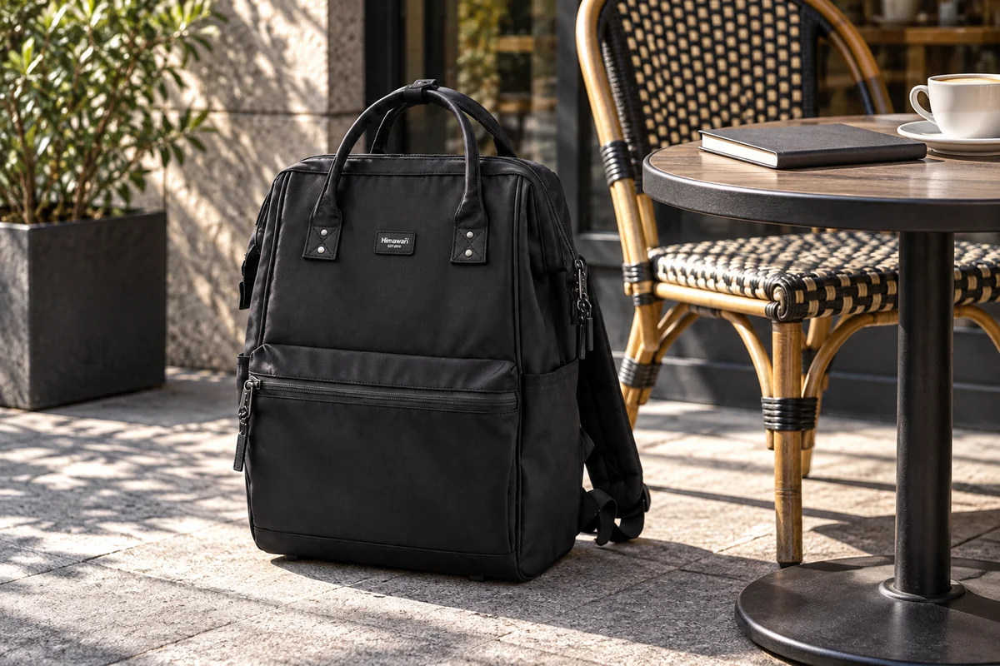

면접 전날 서류를 꺼내고 다시 넣어보는 연습

면접 전날에는 옷과 답변을 준비한 뒤 가방을 마지막으로 챙기기 쉽습니다. 그때 준비물을 넣는 것에서 한 단계 더 나아가 접수할 물건을 꺼내고 다시 넣어보면 당일의 동작을 알 수 있습니다. 대기 중 볼 개인 메모와 제출할 서류도 역할이 다릅니다. 가방을 새로 고르기 전에 받은 안내와 실제 물건을 기준으로 사용할 순서를 정해봅니다.
필수 준비물은 면접 안내에서 확인합니다. 신분 확인 자료와 서류, 개인 기기가 필요한지는 회사와 전형의 실제 안내를 따릅니다. 일반적인 목록을 전부 담는 대신 요구된 항목을 적고 현재 준비한 물건과 대조합니다. 원본인지 출력본인지 불명확한 부분은 안내된 문의 방법으로 확인합니다. 평소 가지고 다니던 노트북도 당일 필요한지 별도로 판단합니다.
제출할 자료와 내가 볼 자료
제출할 서류는 필요한 순서와 형태를 안내에 맞춰 정합니다. 대기 중 읽을 메모는 다른 묶음으로 둘 수 있습니다. 비슷한 파일을 쓴다면 표지나 개인 표시로 구분하세요. 어떤 자료를 제출하는지 확인하기 위해 가방 안의 종이를 전부 펼쳐야 한다면 출발 전에 묶음을 다시 정리합니다. 안내와 다른 자료를 임의로 추가할 이유도 생각해봅니다.
신분 확인에 필요한 물건은 서류 사이에 느슨하게 끼워 넣기보다 정해둔 위치를 고릅니다. 실제로 보여준 뒤 어디에 돌려둘지도 정하면 접수의 앞뒤가 이어집니다. 사용하는 가방에서 한 물건을 꺼낼 때 지갑이나 다른 소지품이 따라 나오지 않는지 살펴볼 수 있습니다. 익숙한 위치라면 새로 바꾸기보다 그대로 쓰는 선택도 가능합니다.
대기용 메모는 너무 많은 종이로 만들 필요는 없습니다. 당일 다시 볼 내용이 무엇인지 고르고 표시한 버전을 준비합니다. 여러 초안이 있다면 연습했던 자료와 구분하세요. 입실 전에 메모를 정리할 위치도 정합니다. 자료를 가지고 있다는 사실보다 필요한 순간에 무엇을 펼칠지 알아야 동작이 분명해집니다.
이 글에 소개한 Himawari No.1884 제품 정보는 서류를 들고 외출할 가방을 살펴볼 자료입니다. 평소 가방으로 준비할 수 있다면 실제 파일을 넣고 꺼내는 순서부터 해보세요. 면접 한 번을 위해 쓰지 않을 큰 크기를 선택해야 하는 것은 아닙니다. 가져가야 할 묶음을 정한 뒤 일상에서 익숙한 배치가 가능한지 보는 편이 선택에 도움이 됩니다.

의자 하나에서 이어볼 동작
집의 의자 옆에 가방을 놓고 앉아 접수용 물건을 꺼내봅니다. 파일과 다른 짐이 함께 움직이는지, 손에 무엇이 남는지 봅니다. 시간을 재어 빨리 하려고 할 필요는 없습니다. 이어서 물건을 다시 넣고 가방을 닫아 일어나봅니다. 잠깐의 준비는 가방 전체를 열어 두는 상태와 실제 사용 동작을 구분하는 자료가 됩니다.
당일 입을 재킷이나 외투를 입고 가방을 메고 벗어볼 수 있습니다. 끈과 옷깃이 어떻게 놓이는지, 파일을 먼저 들고 있으면 가방을 벗는 순서가 달라지는지 확인합니다. 옷을 걸친 모습을 사진으로만 보는 것과 실제로 움직이는 것은 다릅니다. 필요한 경우 개인 소지품을 어디에 둘지 정하고 다시 같은 동작을 이어봅니다.
새 가방을 사용할 예정이라면 지퍼와 물건 위치에 익숙해질 시간이 필요할 수 있습니다. 외형을 정돈한 뒤 실제 준비물을 넣어봅니다. 모르는 포켓을 당일 처음 쓰는 대신 지금 물건을 넣고 찾는 방법을 정합니다. 특정 브랜드나 색이 평가에 유리하다고 생각해 선택하기보다 안내된 조건과 자신의 사용 순서를 기준으로 고릅니다.
현장의 안내에 맞춰 바꾸기
도착한 뒤에는 직원이 안내하는 접수와 보관 순서를 따릅니다. 집에서 연습한 방식이 현장의 위치와 같을 필요는 없으므로 필요한 부분을 맞추어 바꿉니다. 개인 기기 사용 안내가 있다면 그에 맞춥니다. 가방을 둘 곳이 애매하면 통로나 옆자리를 임의로 쓰지 않고 안내를 확인합니다.
대기 중 꺼낸 메모와 펜은 입실 전에 원래 묶음으로 돌려놓습니다. 가방을 들고 이동해야 한다면 손에 열린 파일이 남아 있는지도 봅니다. 바뀐 진행 안내가 있으면 필요한 준비물을 다시 확인합니다. 처음 챙긴 목록이 모두 있다는 것과 지금 사용할 항목이 맞다는 것은 서로 다른 확인입니다.
가방을 벗어두는 경우에는 본체와 끈의 위치를 봅니다. 주변 사람의 움직임을 막지 않고 자신의 물건을 찾을 수 있는 자리로 정합니다. 가방을 다른 공간에 보관해야 하면 반환이나 회수 안내를 알아둡니다. 지금 안내받은 범위를 기억하고 이후에 어디로 돌아가야 하는지 확인하면 면접 뒤의 동선도 생깁니다.
끝난 자리에서 개인 물건 회수하기
면접이 끝나면 서류를 두었던 위치와 앉았던 자리, 가방을 둔 곳을 실제 사용한 순서대로 봅니다. 돌려받은 개인 물건이 있다면 원래 위치로 넣습니다. 새로 받은 자료나 안내도 따로 정리하세요. 모든 종이를 제출용 파일에 함께 밀어 넣기보다 집에서 다시 볼 내용이 어느 묶음인지 알아볼 수 있게 남깁니다.
귀가 후에는 당일 메모와 이후 안내를 나누어 읽습니다. 준비물 중 쓰지 않은 것이 있으면 다음 전형에도 불필요하다고 바로 생각하지 않고 새 안내와 비교할 자료로 둡니다. 꺼내기 어려웠던 파일이나 물건이 있다면 위치를 고칠 수 있습니다. 결과와 관계없이 실제 동작에서 알게 된 점을 짧게 남기는 기록입니다.
다음 면접의 준비도 받은 안내에서 시작합니다. 필요한 서류와 개인 메모를 구분하고 의자에서 꺼내고 되담는 순서를 한 번 이어보세요. 당일 옷차림과 가방의 위치가 바뀌면 그 조건으로 다시 해봅니다. 접수에 쓸 물건을 찾아 보여준 뒤 원래 자리로 돌려놓을 수 있으면 가방 안의 역할이 분명해집니다.